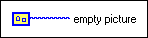

Empty Picture VI
Owning Palette: Picture Functions VIs
Requires: Base Development System
Returns an empty picture. The picture input for all Picture VIs is an empty picture by default.
You also can create a picture constant for an empty or existing picture and wire the constant to any picture input. You can resize the constant or right-click it and select Visible Items»Scrollbar from the shortcut menu to view the entire picture.

 Add to the block diagram Add to the block diagram |
 Find on the palette Find on the palette |